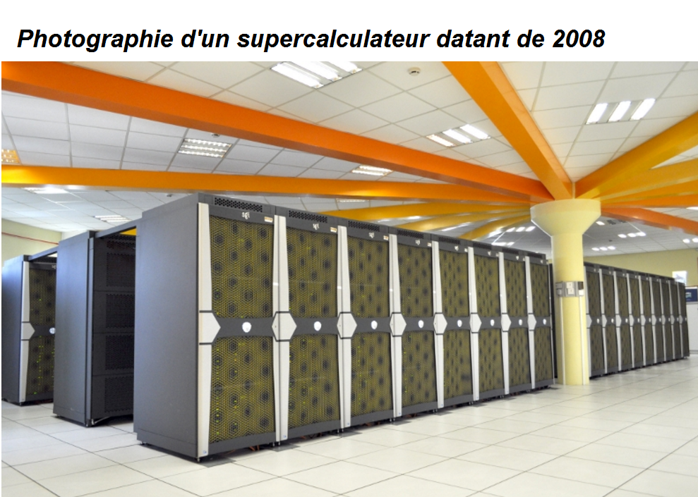

L'informatique dans les prévisions météorologiques
Pour prévoir le temps, il faut avoir des observations récentes et instantanées (en direct). Cela permet d’avoir un « état initial de l’atmosphère ». Ces informations sont rentrées dans des simulateurs, des ordinateurs dans lesquels des programmes simulent l’évolution de l’atmosphère. Les algorithmes de simulations obéissent aux lois de notre monde : lois physiques, lois mécaniques. Ils prennent donc en considération tous les phénomènes vus précédemment.
Les simulations décomposent l’espace en de nombreuses « boîtes ». Les boîtes sont des divisions de l’espace avec des tronçons de taille variant de 1,3 (model Arome depuis 2015) à 35 km de long et qui s'empilent aussi en hauteur, formant une colonne allant de 50 à 60 boîtes. Toutes les boîtes n’ont pas forcément la même taille, des stations telles que météo-Frances choisissent de mettre en place des boîtes plus petites dans les zones les plus susceptibles d’être intéressantes et d’agrandir celles qui se situent sur des zones où il y aura peu d’activité pour éviter des calculs trop lourds et donc obtenir des résultats rapides et pertinents . Un des problèmes est de savoir quelles sont les zones où il faut diminuer ou augmenter la maille. La distance entre deux points définit la grille de résolution. Dans chaque boîte sont rentrées les valeurs des mesures météorologiques (la température, la pression, la force et la direction du vent…).

Les résultats donnés par les simulateurs sont des « scénarios d’évolution ». Il faut ensuite l’intervention d’experts pour sélectionner les scénarios les plus probables. Enfin les scénarios sont traduits en carte des prévisions et en bulletins météorologiques. Plus une prévision est éloignée dans le temps, plus la probabilité est grande qu’elle soit fausse. Les modèles numériques sont cependant limités par plusieurs facteurs - par la résolution spatiale: les modèles ont des difficultés à présenter des scénarios d’évolution fiables sur des zones locales. - par la résolution temporelle: de nombreuses variables rentrent en compte et on ne peut pas toutes les quantifier.
Comme les phénomènes atmosphériques évoluent d'une manière complexe, il est difficile d’être sûr de la fiabilité des résultats. Le nombre de facteurs entrés dans le modèle de simulation, restreint aussi la prévision. Plus le nombre de facteurs est élevé, plus les calculs sont nombreux et complexes, ce qui se traduit par une importante augmentation du temps nécessaire pour traiter les données et fournir les résultats. Et cela augmente aussi le prix pour les fournir. Logiquement, les prévisions les plus proches dans le temps sont les plus fiables, puis un modèle numérique devient généralement de moins en moins fiable. Des éléments géographiques (forêts/villes/fleuves…), les conditions du sol (neige/glace…) peuvent aussi altérer les résultats des prévisions, c’est le cas du bassin Atlantique où se forment des ouragans par exemple.
Ainsi l’informatique a été une autre révolution en météorologie. Elle a permis d’augmenter l’étendue et la précision des prévisions, avec une échéance moyenne qui est passée de 5 jours à 10 jours en quelques dizaines d’années. Les prévisions météorologiques de nos jours dépendent principalement des ressources informatiques, de leurs performances et de leurs capacités de traitement. Il existe de nombreux modèles de prévision, avec des buts différents. Par exemple prévoir à 1 semaine ou à 2 jours, ou à 1 an voire sur des milliers d’années en avance. Et pour faire tourner toutes ces simulations il faut des ordinateurs extrêmement puissants, les supercalculateurs.